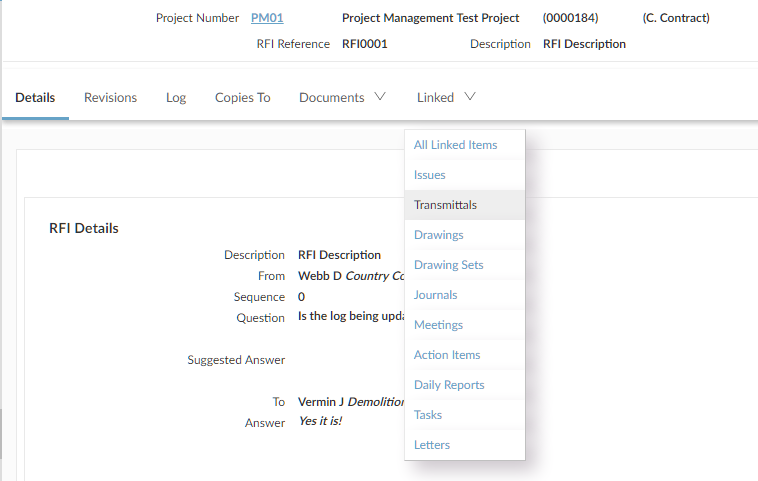

One of the important benefits of using Project Management is being able to find related information quickly. Every item has a Linked tab, which lists any other items that have been linked to it. Hyperlinks allow you to go quickly to any linked item.

Linking is reciprocal, so if